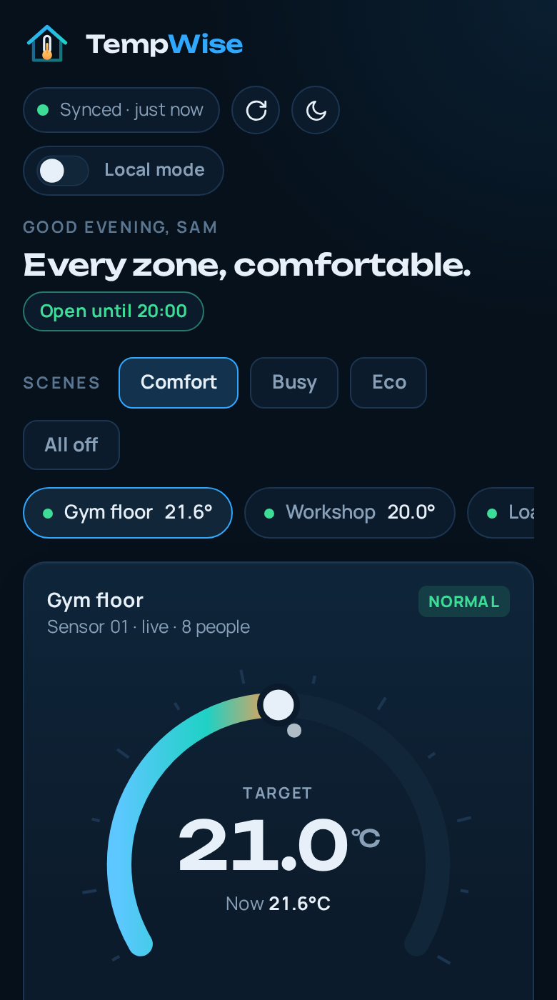
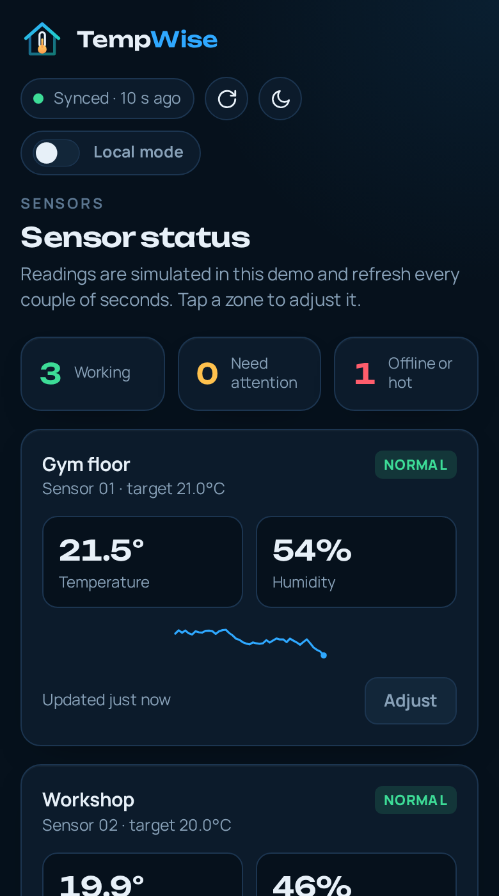
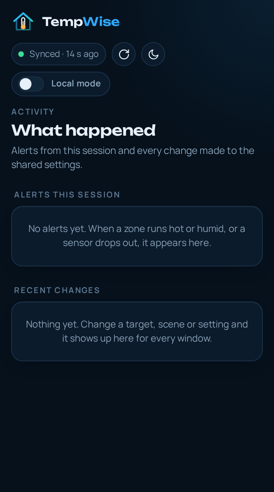
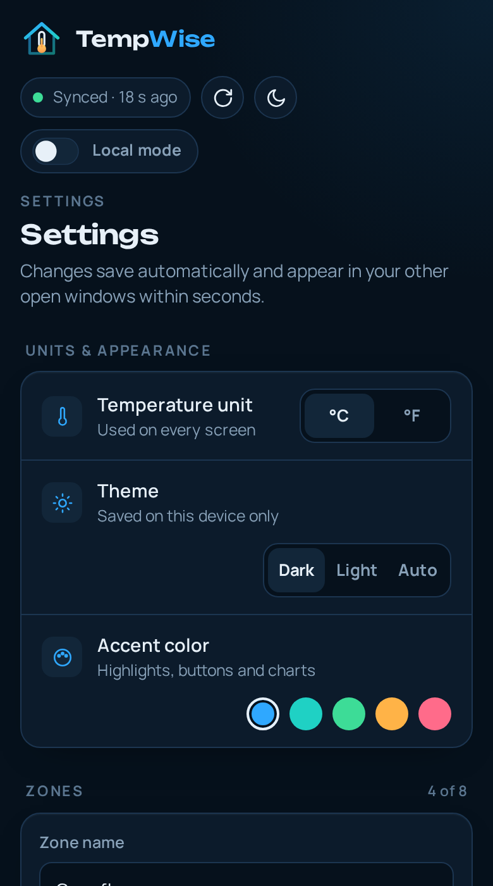
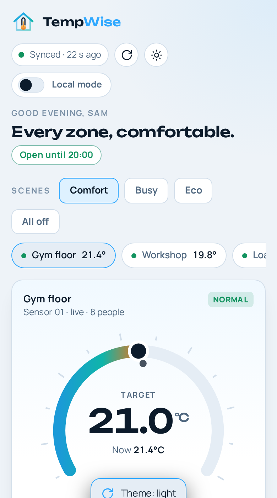

Zone control
Pick a target and a mode (cool, heat, auto or off) for each area. The dial shows the target and the current reading together.
For shops, gyms and work floors
Work spaces get hot where people move and cold where they don’t. TempWise gives every zone its own target and schedule, shows what each sensor reads right now, and warns you before a room gets uncomfortable.
Bodies add heat fast. Keep the floor cool without freezing the front desk.
Tools, wood and paint care about humidity as much as people care about heat.
Doors open all day. Know which zone is drifting before the crew feels it.
What it does
Pick a target and a mode (cool, heat, auto or off) for each area. The dial shows the target and the current reading together.
Temperature, humidity and a trend line for every sensor, plus a clear flag when one goes offline.
Comfort, Busy, Eco and All off. One tap sets every zone, and the active scene lights up.
Set opening hours for each day. Outside them, Eco relaxes targets. Pre-cooling gets rooms ready before you open.
Choose a high-temperature limit and a humidity limit. Turn each alert type on or off on its own.
See every alert and every change, and which window made it. Nothing changes without a record.
Change a setting in one window and every other open window updates within a second, with a note about what changed.
Try a different temperature in one window without touching the thermostat or anyone else’s screen. Keep it or throw it away.
Export settings and readings, import them back, install TempWise as an app and keep using it without a connection.
Local mode
Switch on Local mode and every change you make stays in your window. The thermostat keeps holding the synced value, other screens don’t move, and anything you changed is tagged Local.
When you like what you see, Sync to all devices makes it real. If you don’t, Discard puts everything back.
How it works
Name the zone the way your crew does: Gym floor, Workshop, Loading bay. Add or rename zones any time.
Use the dial or the plus and minus buttons, then enter opening hours for each day of the week.
TempWise keeps each zone near target, relaxes it when you’re closed, and shows anything that needs attention on the home screen.
Screens





Questions
No. This site and the demo app show how TempWise works. Sensor readings are simulated so you can try every screen. The code is organized so you can connect your own sensors and controllers.
In the demo, settings sync between every open tab and window in the same browser. To sync separate devices, point js/sync.js at a backend such as Firebase or Supabase. The README shows how.
In your browser’s local storage, on your device only. Use Reset demo data in the Account screen to clear it, or export your settings first to keep a copy.
Yes. After the first visit, the site and the app load without a connection. Fonts and scripts are bundled.
Yes. In Chrome, Edge and most Android browsers, use the install option in the address bar or menu. On iPhone, use Share, then Add to Home Screen. The Account screen shows an Install button when your browser offers one.
Yes. It is released under the MIT License. Fork it, change the zones and colors, and publish it on GitHub Pages.